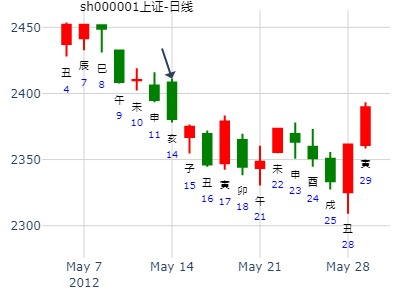
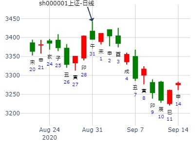

占事：002559亚威股份7日涨跌
排卦：元亨利贞网六爻在线排盘系统 http://www.china95.net
公历起卦时间：2014年1月6日15时13分 (电脑自动)
干支：癸巳年 甲子月 丁丑日 戊申时 （日空：申酉）
神煞：驿马－亥 桃花－午 日禄－午 贵人－酉，亥
离宫：天火同人 (归魂) 乾宫：天山遁
青龙 子孙壬戌土 ▅▅▅▅▅ 应 子孙壬戌土 ▅▅▅▅▅
玄武 妻财壬申金 ▅▅▅▅▅ 妻财壬申金 ▅▅▅▅▅ 应
白虎 兄弟壬午火 ▅▅▅▅▅ 兄弟壬午火 ▅▅▅▅▅
腾蛇 官鬼己亥水 ▅▅▅▅▅ 世 妻财丙申金 ▅▅▅▅▅
勾陈 子孙己丑土 ▅▅ ▅▅ 兄弟丙午火 ▅▅ ▅▅ 世
朱雀 父母己卯木 ▅▅▅▅▅ ○→ 子孙丙辰土 ▅▅ ▅▅
主帖标题: 2016丙申年上证指数每天预测实战探索（每天在回复中更新）
公历：2016年2月22日9时30分，星期一。
干支：丙申年 庚寅月 甲戌日 己巳时 (卦身：申)
主变卦 天火同人(离宫-归魂) 之 天山遁(乾宫) [空亡:申、酉]
玄武 ▅▅▅▅▅ 子孙壬戌土 应 ▅▅▅▅▅ 子孙壬戌土
白虎 ▅▅▅▅▅ 妻财壬申金 ▅▅▅▅▅ 妻财壬申金 应
螣蛇 ▅▅▅▅▅ 兄弟壬午火 ▅▅▅▅▅ 兄弟壬午火
勾陈 ▅▅▅▅▅ 官鬼己亥水 世 ▅▅▅▅▅ 妻财丙申金
朱雀 ▅▅ ▅▅ 子孙己丑土 ▅▅ ▅▅ 兄弟丙午火 世
青龙 ▅▅▅▅▅○父母己卯木 ▅▅ ▅▅ 子孙丙辰土
主题：3月25日焦炭1309的走势 1679
癸巳 乙卯 庚寅 庚辰 (日空:午未 时空:申酉 四大空亡:金)
癸巳年二月十四(2013/03/25 08:39:06)
天火同人 天山遁
腾蛇 子孙戌土 ／ 应 子孙戌土 ／
勾陈 妻财申金 ／ 妻财申金 ／ 应
朱雀 兄弟午火 ／ 兄弟午火 ／
青龙 官鬼亥水 ／ 世 妻财申金 ／
玄武 子孙丑土 ∥ 兄弟午火 ∥ 世
白虎 父母卯木 ○ 子孙辰土 ∥
主帖标题: [原创]预测4月6日上海大盘趋势
起卦方式：手工指定 公历时间：2007年4月5日17时19分 星期四
农历时间：丁亥年二月十八酉时
干支：丁亥年 甲辰月 己巳日 癸酉时 (旬空：戌亥)
神煞：驿马—亥 桃花—午 日禄—午 贵人—子，申特别提示您：今天12时27分交清明节
离宫：天火同人（归魂） 乾宫：天山遁
六神 【本 卦】 【变 卦】
勾陈 ▅▅▅▅▅ 子孙壬戌土 应 ▅▅▅▅▅ 子孙壬戌土
朱雀 ▅▅▅▅▅ 妻财壬申金 ▅▅▅▅▅ 妻财壬申金 应
青龙 ▅▅▅▅▅ 兄弟壬午火 ▅▅▅▅▅ 兄弟壬午火
玄武 ▅▅▅▅▅ 官鬼己亥水 世 ▅▅▅▅▅ 妻财丙申金
白虎 ▅▅ ▅▅ 子孙己丑土 ▅▅ ▅▅ 兄弟丙午火 世
螣蛇 ▅▅▅▅▅ 父母己卯木 ○→ ▅▅ ▅▅ 子孙丙辰土
开盘似乎下跌；全天来看，兑现者多，大盘下跌23点---30点左右！
4月周卦：下周上证走势04.08-12。同人之遁。.md
起卦方式：铜钱摇卦 占问事宜：关心的事情 元亨mother
起卦公历：2019年4月7日16时26分(北京时间)
起卦干支： 己亥年 戊辰月 甲戌日 壬申时 (卦身：寅)
主变卦 天火同人(离宫-归魂) 之 天山遁(乾宫) [空亡:申、酉]
玄武 ━━━ 子孙壬戌土 应 ━━━ 子孙壬戌土
白虎 ━━━ 妻财壬申金 ━━━ 妻财壬申金 应
螣蛇 ━━━ 兄弟壬午火 ━━━ 兄弟壬午火
勾陈 ━━━ 官鬼己亥水 世 ━━━ 妻财丙申金
朱雀 ━ ━ 子孙己丑土 ━ ━ 兄弟丙午火 世
青龙 ━━━○父母己卯木 ━ ━ 子孙丙辰土
主帖标题: 2020.04.20--24上证指数擂台赛第十五场P方（周测参赛贴）
起卦方式：手动摇卦 (周易世界 www.zhouyiworld.com)
公历时间：2020年4月19日22时31分 农历时间：庚子年 三月二十七日亥时
干 支：庚子年 庚辰月 壬辰日 辛亥时
旬 空：辰巳 申酉 午未 寅卯
离宫：天火同人（归魂） 乾宫：天山遁
六神 【本 卦】 【变 卦】
白虎 ▄▄▄▄▄ 子孙壬戌土 应 ▄▄▄▄▄ 子孙壬戌土
螣蛇 ▄▄▄▄▄ 妻财壬申金 ▄▄▄▄▄ 妻财壬申金 应
勾陈 ▄▄▄▄▄ 兄弟壬午火 ▄▄▄▄▄ 兄弟壬午火
朱雀 ▄▄▄▄▄ 官鬼己亥水 世 ▄▄▄▄▄ 妻财丙申金
青龙 ▄▄ ▄▄ 子孙己丑土 ▄▄ ▄▄ 兄弟丙午火 世
玄武 ▄▄▄▄▄ 父母己卯木 O-> ▄▄ ▄▄ 子孙丙辰土
西部建设到年底买卖得财如何？ --金 在线摇卦
时间: 2025-04-03 10时24分
干支: 乙巳年己卯月壬寅日 (旬空: 辰巳 )
天火同人(归魂) 天山遁
六神 伏神 本 卦 变 卦
白虎 ▅▅▅▅▅ 子孙戌土 应 ▅▅▅▅▅ 子孙戌土
腾蛇 ▅▅▅▅▅ 妻财申金 ▅▅▅▅▅ 妻财申金 应
勾陈 ▅▅▅▅▅ 兄弟午火 ▅▅▅▅▅ 兄弟午火
朱雀 ▅▅▅▅▅ 官鬼亥水 世 ▅▅▅▅▅ 妻财申金
青龙 ▅▅ ▅▅ 子孙丑土 ▅▅ ▅▅ 兄弟午火 世
玄武 ▅▅▅▅▅ 父母卯木 Ｏ→ ▅▅ ▅▅ 子孙辰土
巨星科技未来几个月走势如何？ --天同 手工指定
时间: 2025-04-21 12时04分
干支: 乙巳年庚辰月庚申日 (旬空: 子丑 )
天火同人(归魂) 天山遁
六神 伏神 本 卦 变 卦
腾蛇 ▅▅▅▅▅ 子孙戌土 应 ▅▅▅▅▅ 子孙戌土
勾陈 ▅▅▅▅▅ 妻财申金 ▅▅▅▅▅ 妻财申金 应
朱雀 ▅▅▅▅▅ 兄弟午火 ▅▅▅▅▅ 兄弟午火
青龙 ▅▅▅▅▅ 官鬼亥水 世 ▅▅▅▅▅ 妻财申金
玄武 ▅▅ ▅▅ 子孙丑土 ▅▅ ▅▅ 兄弟午火 世
白虎 ▅▅▅▅▅ 父母卯木 Ｏ→ ▅▅ ▅▅ 子孙辰土
同人之遁， 占事：明日大盘行情
作者: 守正攻奇
起卦方式：时间起卦 易经股市论坛www.yijingstock.com在线排盘系统 [b]
公历时间：2012年5月14日17时53分
干 支：壬辰年 乙巳月 乙亥日 乙酉时
旬 空：午未 寅卯 (申酉) 午未
离宫：天火同人（归魂） 乾宫：天山遁
玄武 ▄▄▄▄▄ 子孙壬戌土 应 ▄▄▄▄▄ 子孙壬戌土
白虎 ▄▄▄▄▄ 妻财壬申金 ▄▄▄▄▄ 妻财壬申金 应
螣蛇 ▄▄▄▄▄ 兄弟壬午火 ▄▄▄▄▄ 兄弟壬午火
勾陈 ▄▄▄▄▄ 官鬼己亥水 世 ▄▄▄▄▄ 妻财丙申金
朱雀 ▄▄ ▄▄ 子孙己丑土 ▄▄ ▄▄ 兄弟丙午火 世
青龙 ▄▄▄▄▄ 父母己卯木 O-> ▄▄ ▄▄ 子孙丙辰土
只应在当天，先跌后涨。

占事：000045深纺织明天涨跌
排卦：元亨利贞网六爻在线排盘系统 http://www.china95.net
公历起卦时间：2014年6月16日15时8分 (电脑自动)
干支：甲午年 庚午月 戊午日 庚申时 （日空：子丑）
神煞：驿马－申 桃花－卯 日禄－巳 贵人－丑，未
离宫：天火同人 (归魂) 乾宫：天山遁
六神 伏神 本 卦 变 卦
朱雀 子孙壬戌土 ▅▅▅▅▅ 应 子孙壬戌土 ▅▅▅▅▅
青龙 妻财壬申金 ▅▅▅▅▅ 妻财壬申金 ▅▅▅▅▅ 应
玄武 兄弟壬午火 ▅▅▅▅▅ 兄弟壬午火 ▅▅▅▅▅
白虎 官鬼己亥水 ▅▅▅▅▅ 世 妻财丙申金 ▅▅▅▅▅
腾蛇 子孙己丑土 ▅▅ ▅▅ 兄弟丙午火 ▅▅ ▅▅ 世
勾陈 父母己卯木 ▅▅▅▅▅ ○→ 子孙丙辰土 ▅▅ ▅▅
同人之遁，大跌。
大黑山起铜钱课测沪市大盘(7月21日)之行情涨跌，得：
起卦方式：报数起卦 (17,11) 动爻加时辰
公历时间：2009年7月20日15时6分
干支：己丑年 辛未月 丙寅日 丙申时
旬空：午未 戌亥 戌亥 辰巳
离宫：天火同人（归魂） 乾宫：天山遁
六神 【本 卦】 【变 卦】
青龙 ▄▄▄▄▄ 子孙壬戌土 应 ▄▄▄▄▄ 子孙壬戌土
玄武 ▄▄▄▄▄ 妻财壬申金 ▄▄▄▄▄ 妻财壬申金 应
白虎 ▄▄▄▄▄ 兄弟壬午火 ▄▄▄▄▄ 兄弟壬午火
螣蛇 ▄▄▄▄▄ 官鬼己亥水 世 ▄▄▄▄▄ 妻财丙申金
勾陈 ▄▄ ▄▄ 子孙己丑土 ▄▄ ▄▄ 兄弟丙午火 世
朱雀 ▄▄▄▄▄ 父母己卯木 O-> ▄▄ ▄▄ 子孙丙辰土
亥日大跌，世鬼空出空时大跌一天。
马后炮：
0。变卦遁。不吉。
1，父动化子，整体先跌后涨。但不应在当天先跌后涨。（有可能日卦可用于测二天内行情，用二天内流日去作用？）
2。而是当天卯日跌，次日辰日涨。
3。寅日起卦，申金暗动，可否理解为高开？
主帖标题: 2011年 07月05日 上指 模拟予想趋势
出生：sh000001 年 性别：男 占事：jul 05 2011
排卦：元亨利贞网六爻在线排盘系统 http://www.china95.net
公历起卦时间：2011年7月4日11时41分
干支：辛卯年 甲午月 庚申日 壬午时 （日空：子丑）
神煞：驿马－寅 桃花－酉 日禄－申 贵人－丑，未
离宫：天火同人 (归魂) 乾宫：天山遁
腾蛇 子孙壬戌土 ▅▅▅▅▅ 应 子孙壬戌土 ▅▅▅▅▅
勾陈 妻财壬申金 ▅▅▅▅▅ 妻财壬申金 ▅▅▅▅▅ 应
朱雀 兄弟壬午火 ▅▅▅▅▅ 兄弟壬午火 ▅▅▅▅▅
青龙 官鬼己亥水 ▅▅▅▅▅ 世 妻财丙申金 ▅▅▅▅▅
玄武 子孙己丑土 ▅▅ ▅▅ 兄弟丙午火 ▅▅ ▅▅ 世
白虎 父母己卯木 ▅▅▅▅▅ ○→ 子孙丙辰土 ▅▅ ▅▅
男 占事: 大盘申月行情
起卦方式：手动摇卦 周易天地ww.64gua.com六爻线上排盘系统
公历时间：2014年7月30日15时37分
干支：甲午年 辛未月 壬寅日 戊申时 旬空：辰巳 戌亥 辰巳 寅卯
离宫：天火同人（归魂） 乾宫：天山遁
白虎 ▄▄▄▄▄ 子孙壬戌土 应 ▄▄▄▄▄ 子孙壬戌土
螣蛇 ▄▄▄▄▄ 妻财壬申金 ▄▄▄▄▄ 妻财壬申金 应
勾陈 ▄▄▄▄▄ 兄弟壬午火 ▄▄▄▄▄ 兄弟壬午火
朱雀 ▄▄▄▄▄ 官鬼己亥水 世 ▄▄▄▄▄ 妻财丙申金
青龙 ▄▄ ▄▄ 子孙己丑土 ▄▄ ▄▄ 兄弟丙午火 世
玄武 ▄▄▄▄▄ 父母己卯木 O-> ▄▄ ▄▄ 子孙丙辰土

同人之遁，880758汽车芯片板块指数7月走势。未月走势。
时间: 2022-07-06 01时01分 丑时
干支: 壬寅年丙午月庚申日丁丑时 (旬空: 子丑 )
天火同人(归魂) 天山遁
六神 伏神 本 卦 变 卦
腾蛇 ▅▅▅▅▅ 子孙戌土 应 ▅▅▅▅▅ 子孙戌土
勾陈 ▅▅▅▅▅ 妻财申金 ▅▅▅▅▅ 妻财申金 应
朱雀 ▅▅▅▅▅ 兄弟午火 ▅▅▅▅▅ 兄弟午火
青龙 ▅▅▅▅▅ 官鬼亥水 世 ▅▅▅▅▅ 妻财申金
玄武 ▅▅ ▅▅ 子孙丑土 ▅▅ ▅▅ 兄弟午火 世
白虎 ▅▅▅▅▅ 父母卯木 Ｏ→ ▅▅ ▅▅ 子孙辰土

主题：8月20日黄金的走势 1296
甲午 壬申 癸亥 丙辰 (子丑空) 甲午年七月廿五(2014/08/20 08:42:49)
天火同人 天山遁
白虎 子孙壬戌 ／ 应 子孙壬戌 ／
腾蛇 妻财庚申 ／ 妻财庚申 ／ 应
勾陈 兄弟戊午 ／ 兄弟戊午 ／
朱雀 官鬼癸亥 ／ 离 妻财庚申 ／
青龙 子孙癸丑 ∥ 兄弟戊午 ∥ 乾
玄武 父母乙卯 ○ 子孙丙辰 ∥

主帖标题: 本周好像想明白了
占事：8.31~9.4周沪深300指数如何走？
公历起卦时间：2020年8月30日9时44分 (电脑自动)
干支：庚子年 甲申月 乙巳日 辛巳时 （日空：寅卯）
神煞：驿马－亥 桃花－午 日禄－卯 贵人－子，申
离宫：天火同人 (归魂) 乾宫：天山遁
六神 伏神 本 卦 变 卦
玄武 子孙壬戌土 ▅▅▅▅▅ 应 子孙壬戌土 ▅▅▅▅▅
白虎 妻财壬申金 ▅▅▅▅▅ 妻财壬申金 ▅▅▅▅▅ 应
螣蛇 兄弟壬午火 ▅▅▅▅▅ 兄弟壬午火 ▅▅▅▅▅
勾陈 官鬼己亥水 ▅▅▅▅▅ 世 妻财丙申金 ▅▅▅▅▅
朱雀 子孙己丑土 ▅▅ ▅▅ 兄弟丙午火 ▅▅ ▅▅ 世
青龙 父母己卯木 ▅▅▅▅▅ ○→ 子孙丙辰土 ▅▅ ▅▅

此处官鬼暗动，卯空逢申日冲实反而跌
主帖标题: 11月5日的上证指数
出生：没填 年 性别：男 占事：没填
排卦：元亨利贞网六爻在线排盘系统 http://www.china95.net
公历起卦时间：2012年11月2日18时11分 (按农历时间起卦)
干支：壬辰年 庚戌月 丁卯日 己酉时 （日空：戌亥）
离宫：天火同人 (归魂) 乾宫：天山遁
六神 伏神 本 卦 变 卦
青龙 子孙壬戌土 ▅▅▅▅▅ 应 子孙壬戌土 ▅▅▅▅▅
玄武 妻财壬申金 ▅▅▅▅▅ 妻财壬申金 ▅▅▅▅▅ 应
白虎 兄弟壬午火 ▅▅▅▅▅ 兄弟壬午火 ▅▅▅▅▅
腾蛇 官鬼己亥水 ▅▅▅▅▅ 世 妻财丙申金 ▅▅▅▅▅
勾陈 子孙己丑土 ▅▅ ▅▅ 兄弟丙午火 ▅▅ ▅▅ 世
朱雀 父母己卯木 ▅▅▅▅▅ ○→ 子孙丙辰土 ▅▅ ▅▅
占事：光大银行12月走势 悟道喜悦
起卦方式：手动摇卦 易经股市论坛www.yijingstock.com 在线排盘系统
公历时间：2014年11月30日21时17分
干 支：甲午年 乙亥月 乙巳日 丁亥时
旬 空：辰巳 申酉 (寅卯) 午未
离宫：天火同人（归魂） 乾宫：天山遁
六神 【本 卦】 【变 卦】
玄武 ▄▄▄▄▄ 子孙壬戌土 应 ▄▄▄▄▄ 子孙壬戌土
白虎 ▄▄▄▄▄ 妻财壬申金 ▄▄▄▄▄ 妻财壬申金 应
螣蛇 ▄▄▄▄▄ 兄弟壬午火 ▄▄▄▄▄ 兄弟壬午火
勾陈 ▄▄▄▄▄ 官鬼己亥水 世 ▄▄▄▄▄ 妻财丙申金
朱雀 ▄▄ ▄▄ 子孙己丑土 ▄▄ ▄▄ 兄弟丙午火 世
青龙 ▄▄▄▄▄ 父母己卯木 O-> ▄▄ ▄▄ 子孙丙辰土
主帖标题: 丑妇终须见家翁——上证指数每天预测实战
公历：2015年11月18日9时30分，星期三。
干支：乙未年 丁亥月 戊戌日 丁巳时 (卦身：申)
主变卦 天火同人(离宫-归魂) 之 天山遁(乾宫) [空亡:辰、巳]
朱雀 ▅▅▅▅▅ 子孙壬戌土 应 ▅▅▅▅▅ 子孙壬戌土
青龙 ▅▅▅▅▅ 妻财壬申金 ▅▅▅▅▅ 妻财壬申金 应
玄武 ▅▅▅▅▅ 兄弟壬午火 ▅▅▅▅▅ 兄弟壬午火
白虎 ▅▅▅▅▅ 官鬼己亥水 世 ▅▅▅▅▅ 妻财丙申金
螣蛇 ▅▅ ▅▅ 子孙己丑土 ▅▅ ▅▅ 兄弟丙午火 世
勾陈 ▅▅▅▅▅○父母己卯木 ▅▅ ▅▅ 子孙丙辰土
11月18日，星期三
预测： 跌
主帖标题: 2020.11.16---20上证涨跌（日测）
今天周三涨跌
公历时间：2020年11月18日8时25分 农历时间：庚子年 十月初四日辰时
干 支：庚子年 丁亥月 乙丑日 庚辰时
旬 空：辰巳 午未 戌亥 申酉
离宫：天火同人（归魂） 乾宫：天山遁
六神 【本 卦】 【变 卦】
玄武 ▄▄▄▄▄ 子孙壬戌土 应 ▄▄▄▄▄ 子孙壬戌土
白虎 ▄▄▄▄▄ 妻财壬申金 ▄▄▄▄▄ 妻财壬申金 应
螣蛇 ▄▄▄▄▄ 兄弟壬午火 ▄▄▄▄▄ 兄弟壬午火
勾陈 ▄▄▄▄▄ 官鬼己亥水 世 ▄▄▄▄▄ 妻财丙申金
朱雀 ▄▄ ▄▄ 子孙己丑土 ▄▄ ▄▄ 兄弟丙午火 世
青龙 ▄▄▄▄▄ 父母己卯木 ○ ▄▄ ▄▄ 子孙丙辰土
涨
占事: 测12月19日上证大盘的涨跌？
起卦方式：时间起卦 周易天地www.64gua.com六爻线上排盘系统
公历时间：2008年12月18日18时14分 农历时间：戊子年 十一月二十一日酉时
干支：戊子年 甲子月 壬辰日 己酉时 旬空：午未 戌亥 午未 寅卯
天火同人(归魂) 天山遁
六神 伏神 本 卦 变 卦
白虎 ▅▅▅▅▅ 子孙戌土 应 ▅▅▅▅▅ 子孙戌土
腾蛇 ▅▅▅▅▅ 妻财申金 ▅▅▅▅▅ 妻财申金 应
勾陈 ▅▅▅▅▅ 兄弟午火 ▅▅▅▅▅ 兄弟午火
朱雀 ▅▅▅▅▅ 官鬼亥水 世 ▅▅▅▅▅ 妻财申金
青龙 ▅▅ ▅▅ 子孙丑土 ▅▅ ▅▅ 兄弟午火 世
玄武 ▅▅▅▅▅ 父母卯木 Ｏ→ ▅▅ ▅▅ 子孙辰土